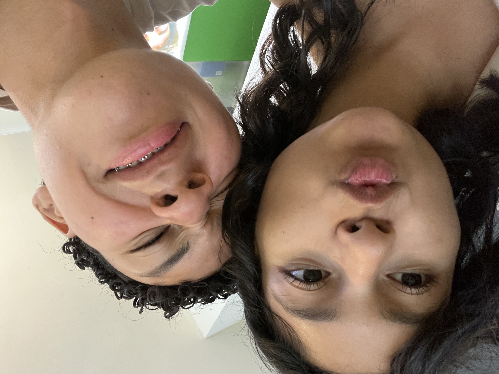
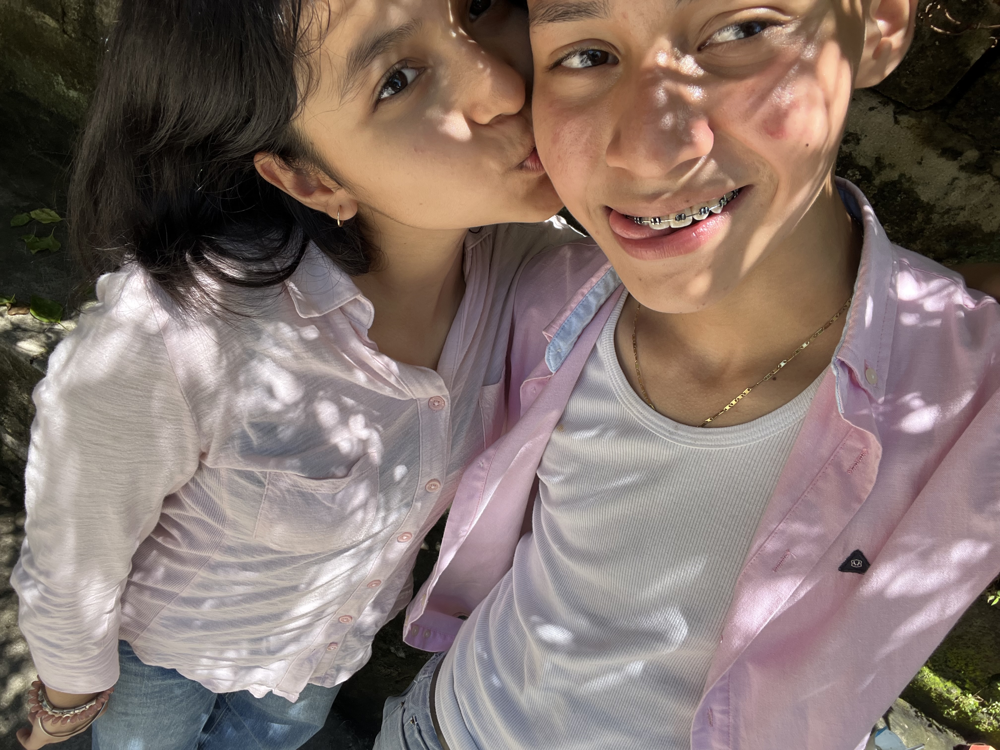

holii miamoor, yo tmb le quería dedicar una cartita y aunq no las sé hacer a mano, me sale muy bien hacerla digital y aparte así le pongo creatividad y pues siento que así junto su forma bonita de hacer cartas y mi creatividad para hacer cosas lindas por alguien que quiero :3

sabe que a pesar que yo nunca he sido de hacer cosas así, es raro pq con ustec simplemente me nació y se siente muy lindo poder sentir todo lo q siento por ustec :3 sinceramente nunca pensé que yo me fuera a encular, siempre pensé que esto quedaría como un “vacíl” o algo parecido sabe, y a pesar que hemos pasado poco tiempo juntos ustec logró ganarse mi corazoncito JAJAJAKA
desde la primera vez sentí lindo pasar juntos y pues fue demasiado raro para mí, pero mi corazoncito nunca me dijo que no quisiera y siento que tmb fue porque desde el día 1 le tuve cierta confianza y pues ajam :3 y no sé como logró enamorar a la persona mas seca del mundo, pero d vdd quiero que lo siga haciendo por siempre y espero que en un futuro se nos cumplan todas nuestras dates soñadas 💙

gracias d vdd por ser un niño tan lindo, chistoso, dramático, cariñoso y tan perfecto para mí, lo amo para siempre 💙
-loamamuxoladayisyis💙